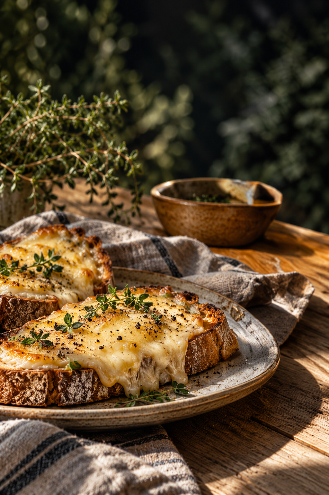
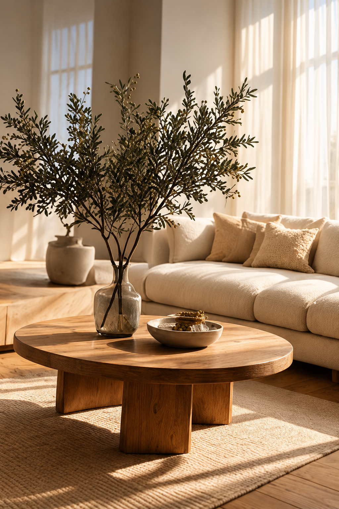
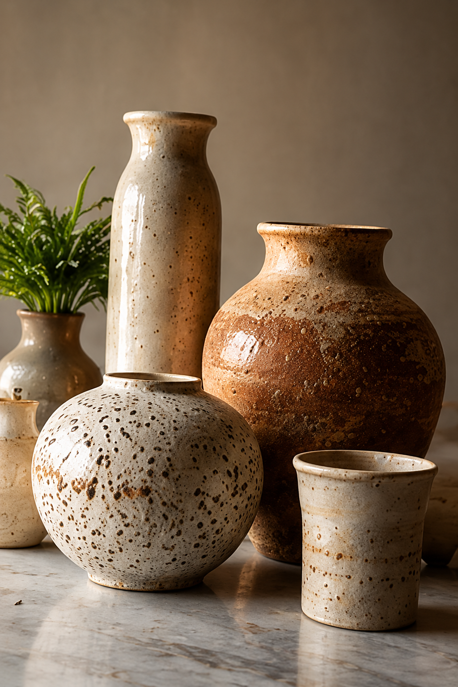
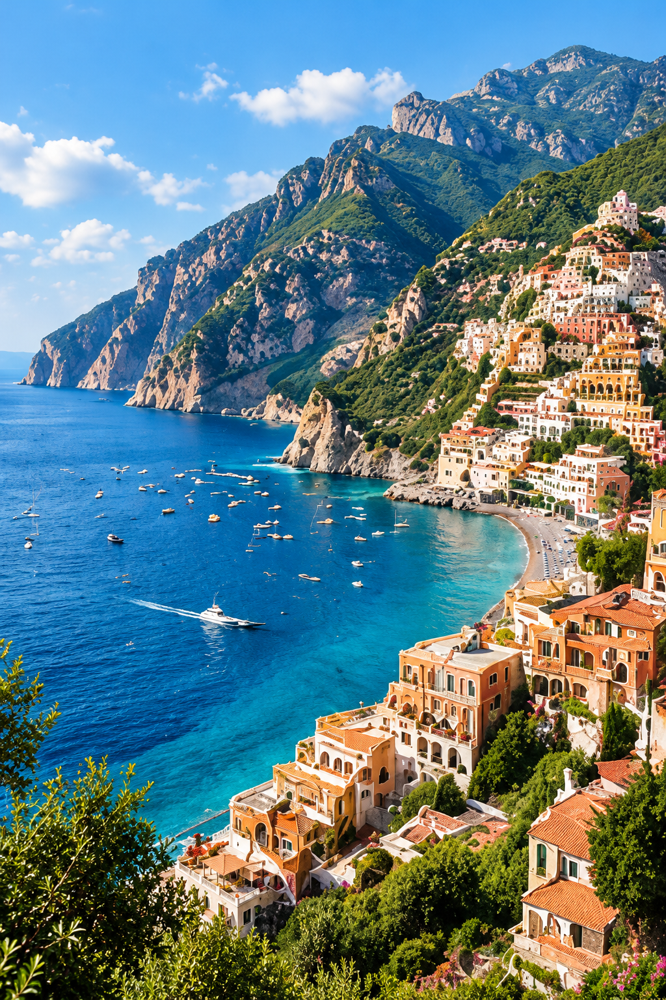
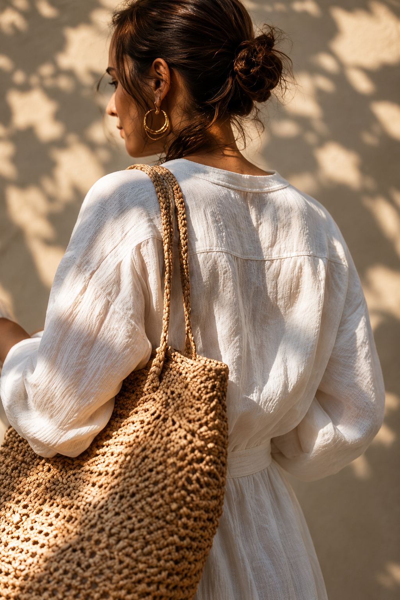
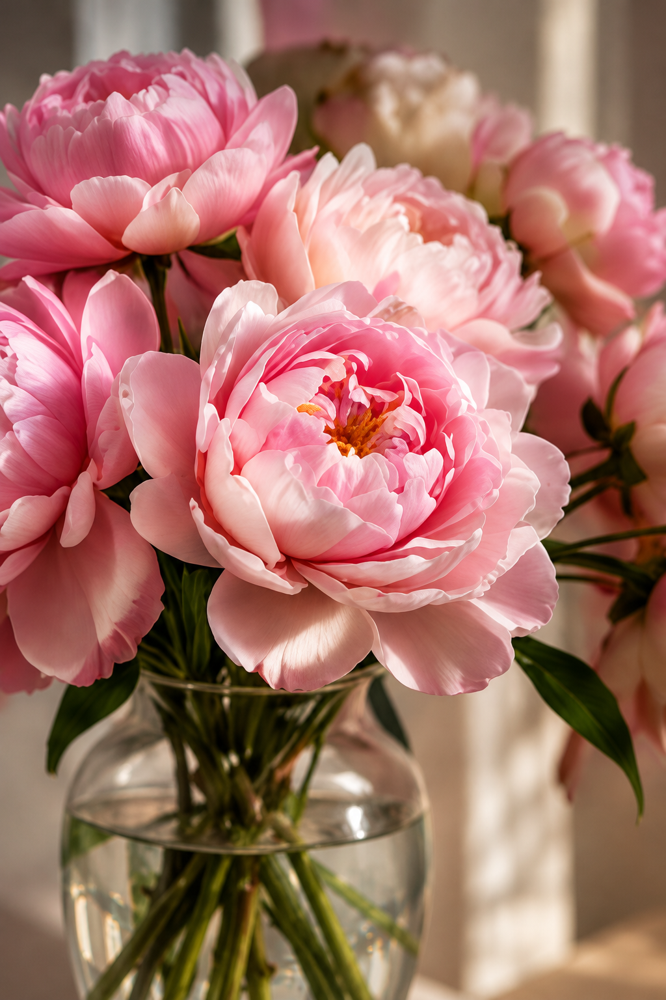
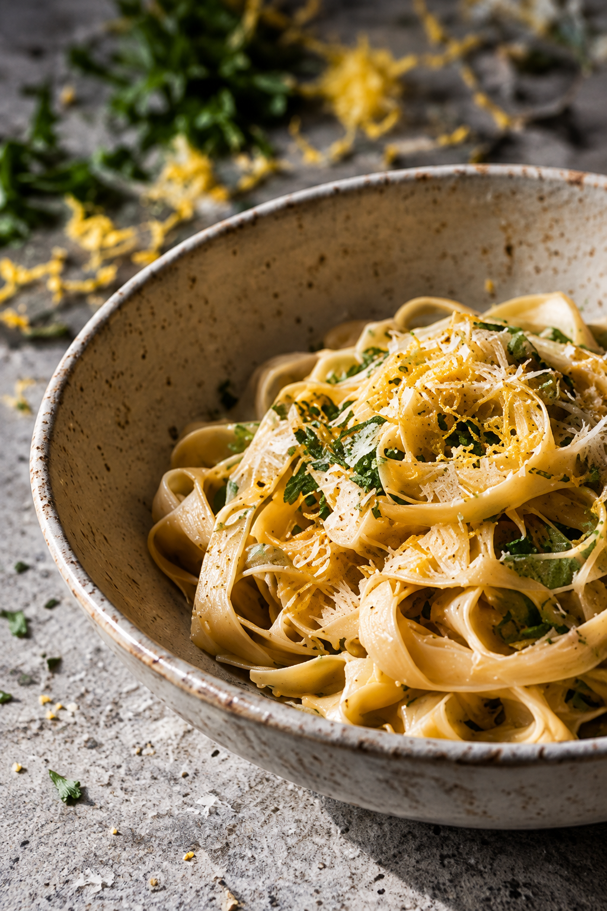
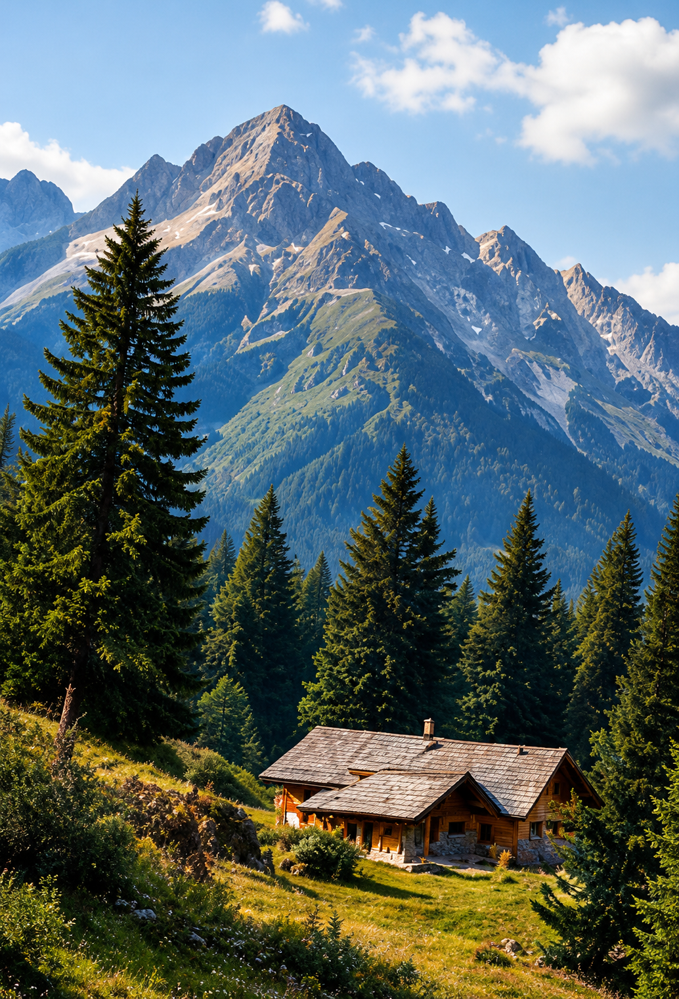
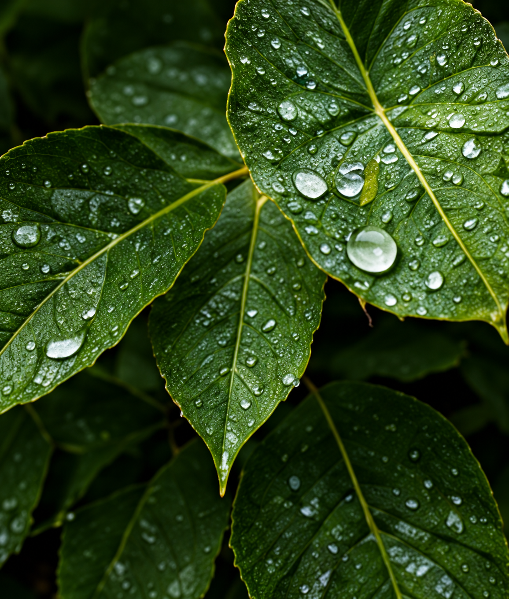
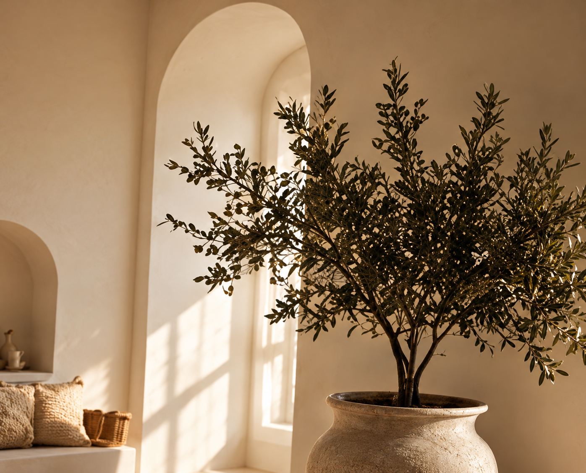
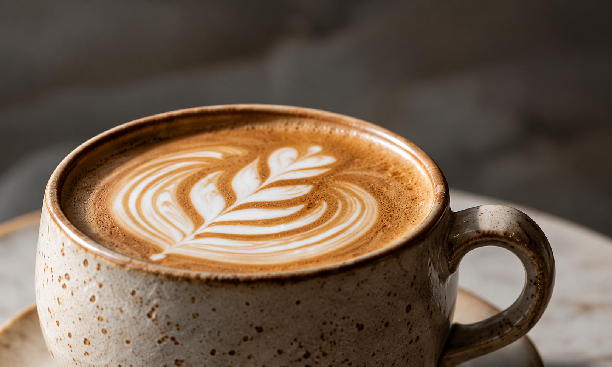
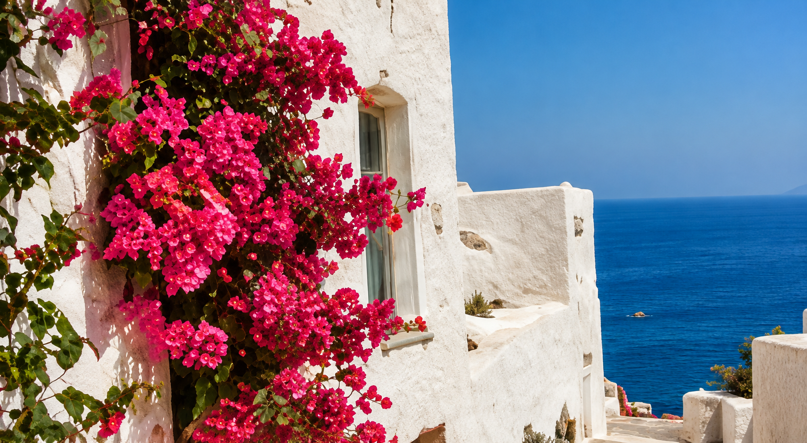
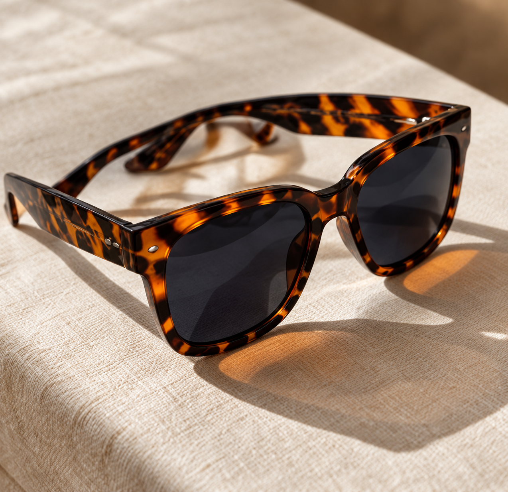
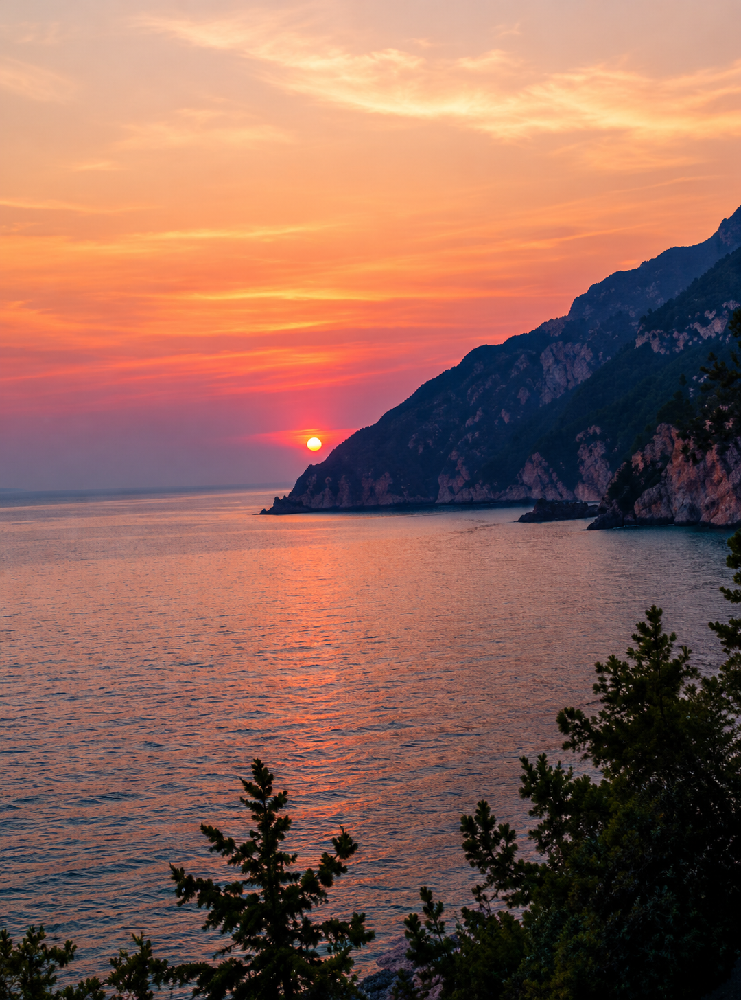
Your next ideastarts here.
Discover what you love. Save what inspires you. Make it your own.
Follow what
catches your eye.
A room, a recipe, somewhere you’ve never been. Start with one idea and see where it takes you.
Drag to explore. Save what catches your eye.
14 ideas to start with
Keep the ideas
you’ll come back to.
Save a Pin. Give it a place. Build a board around what you want to try next.
Find something to saveInteractive demo
Your next chapter
No ideas saved yet
Your next idea belongs here.
Save your first ideaYour saves stay in this browser. They aren’t added to your Pinterest account.
A little inspiration. Wherever you are.
Keep exploring on Pinterest for iOS and Android.
A few things to know.
New to Pinterest? Start here.
What is Pinterest?
Pinterest helps you discover visual ideas for things you want to try, make or plan.
What’s a Pin?
A Pin is an idea you can save. Pins can include images, videos or products.
How do boards work?
Boards bring saved Pins together. Give each board a name and organize it around a project or interest.
Can I keep a board private?
Yes. Secret boards are visible to you and the people you invite.
Will saving here add Pins to my Pinterest account?
This page is an interactive demo. Its saves stay in this browser. Open Pinterest to save ideas to your account.